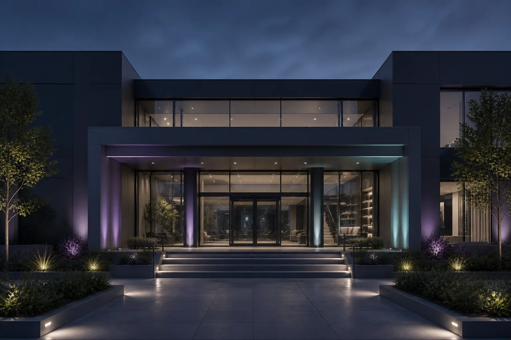
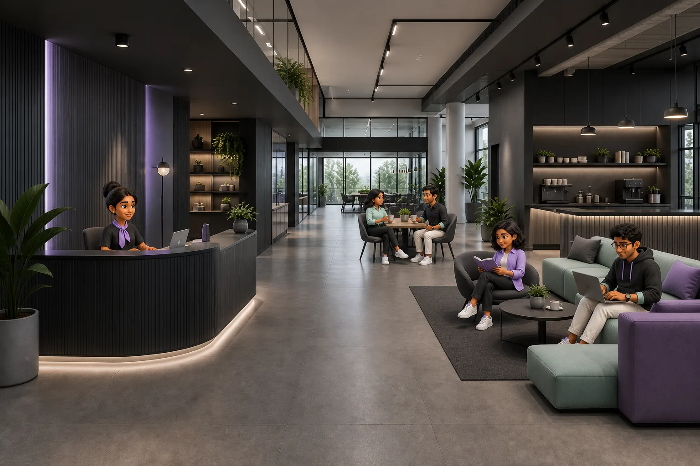
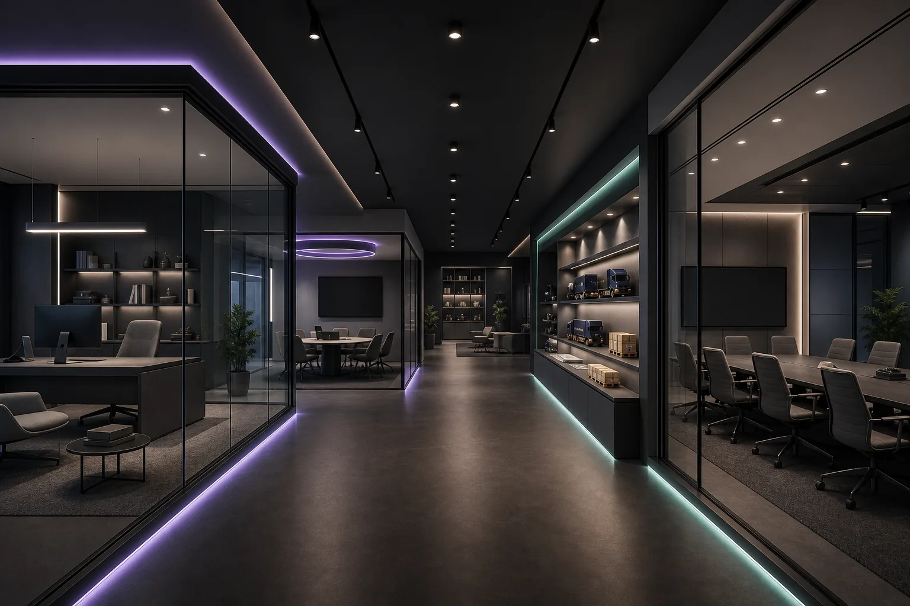
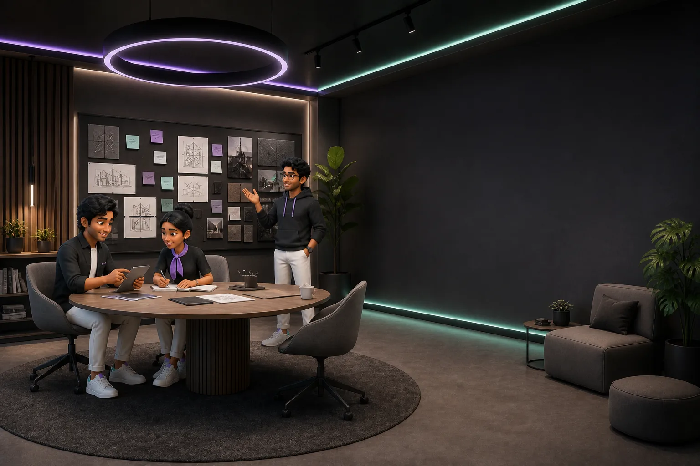
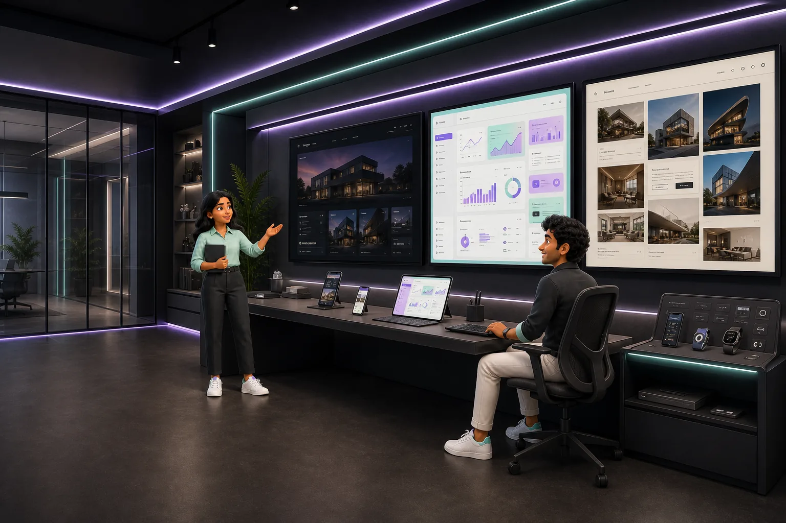

Project Office — Lyvorian Studio

Come inside.
The work lives here.
Scroll forward to enter the building and move through the Lyvorian Studio office.

Welcome to Lyvorian. The project team is expecting you.
A calm start
before the work.
The ground floor is deliberately open: reception, café, lounge seating, and room for informal conversations before decisions become screens.

Every project begins with a real problem—and earns the right to ship.
One vision.
End-to-end care.
Strategy, experience design, engineering, privacy, and long-term stewardship stay connected instead of being handed between disconnected teams.
at a time
What can we remove without losing the value?
Meetings with
a clear outcome.
Project reviews bring research, interaction design, engineering constraints, and launch decisions into the same room.

Let’s test the clearest path before adding another feature.
Ideas become
specific here.
Small discussions turn a loose idea into a testable flow, a useful prototype, and a realistic build plan.
The projects live
beyond this door.
Enter a dedicated corridor where every Lyvorian project has its own working room, story, and live interface.
Open the project floorGo to Projects Room↗Every project
gets its own room.
Each suite introduces the project, its current status, its manager, and the interface itself.
Finance Tracker
Expenses, income, budgets, goals and bills in one clean workspace that shows where the month actually went.
- Bill scanning
- UPI auto-detect
- Budgets & goals


HabitAroha
A calm, private habit tracker for steady progress rather than noisy streak pressure. Core tracking works fully offline.
- Works offline
- Encrypted data
- Quiet progress
Fylunor
Scanning, OCR, compression, redaction and PDF workflows designed so private files can stay on the device.
- Local OCR
- PDF toolkit
- Private by default
Medhakeli
A learning game for children aged 2–9 with no account, no network, no advertising, and drawings kept on-device.
- Ages 2–9
- Fully offline
- No advertising

Websites with
a point of view.
Brand websites, launches and portfolios — built the same way as our own products, on the same terms. Open for enquiries. The layouts shown here are concepts, not client work.
Discuss a website ↗The next room
can be yours.
Follow a project, propose an idea, or start a website project with Lyvorian Studio.